The band, in your pocket.
RogerAI for iPhone, iPad and Mac is live - a two-way radio for AI. Tune into open models running on real GPUs, talk instead of type, and pay only for the tokens you use. Start anonymous: no account needed for on-device and free stations.
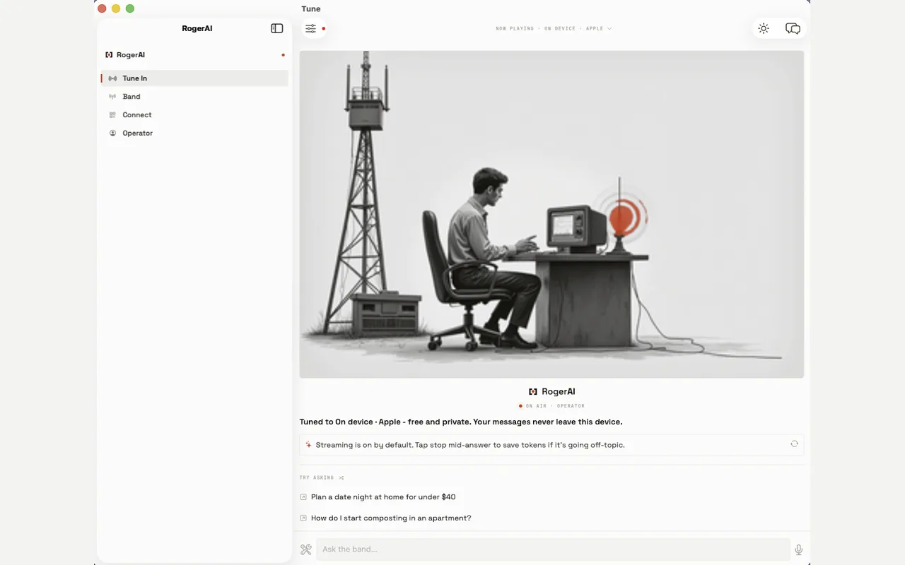
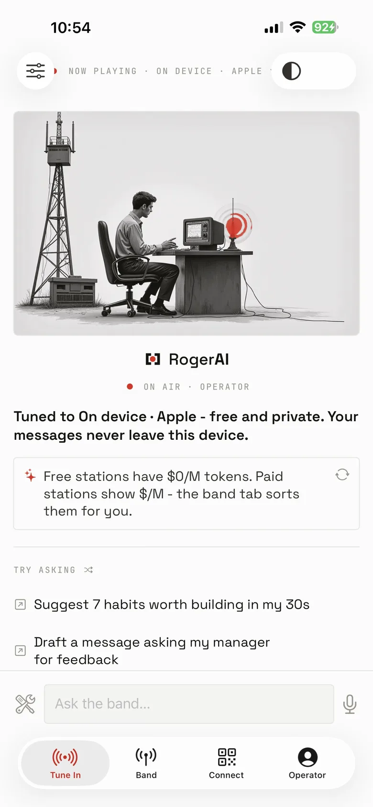
Talk to real machines.
Chat with powerful open models on stations run by real operators - plus Apple Intelligence on device: free, private, replies never leave your phone. Keep multiple conversations, send a photo on vision-capable stations, and select or copy any part of a reply, the way you expect.
- ◉ on-device replies never leave the phone
- ◉ free stations show $0/M tokens
- ◉ photos in, on vision-capable stations
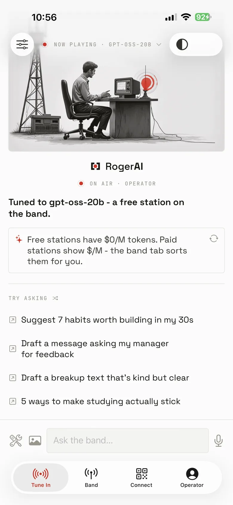
FIG. 3 - A FREE STATIONPick your station by the numbers.
The Band is a live marketplace of stations with real prices and real
speeds - the same roster as roger band and the
Models board. Many stations are free; paid ones
show $/M up front, so you pick the cheapest or the fastest for the job.
Tap a station to tune in and start chatting.
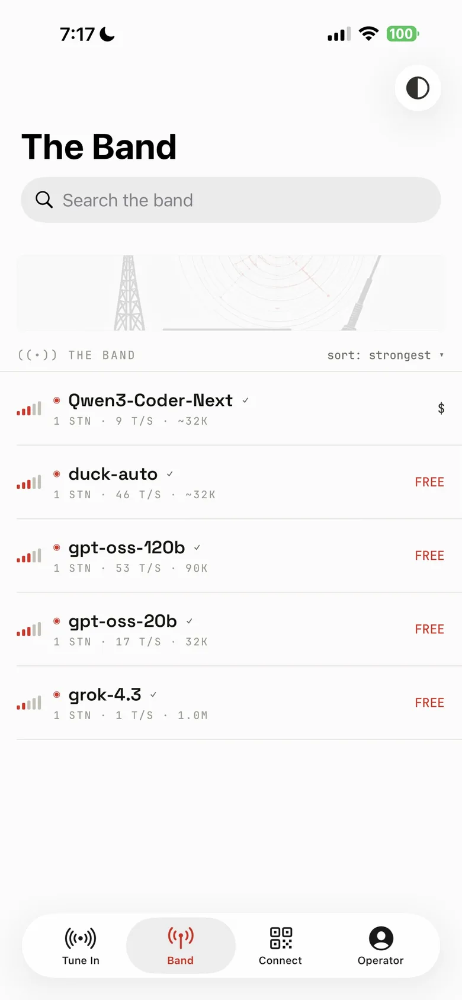
FIG. 4 - THE ROSTER, LIVE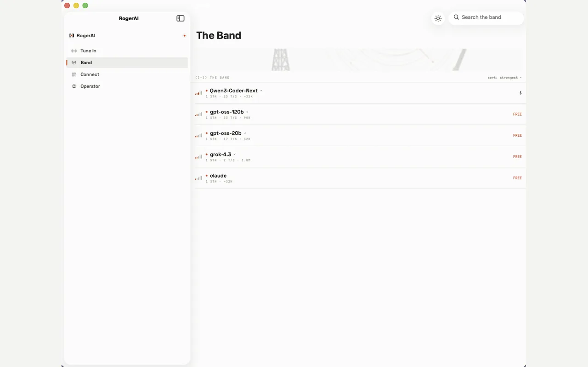
FIG. 5 - SAME BAND, BIG SCREENTune the dial. Roger obeys.
Set a max price per million, a minimum speed in tokens per second, or flip Confidential ◆ - then routing only picks stations inside your margins. Confidential routes go exclusively to nodes that pass real TEE hardware attestation, so the operator literally can't read your prompts.
- ◉ max price /1M · min speed t/s
- ◉ confidential ◆ = TEE-attested only
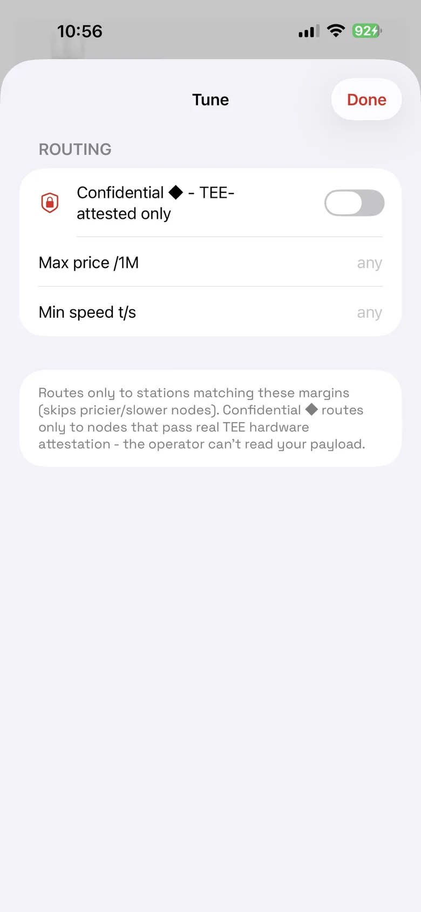
FIG. 6 - THE TUNE SHEET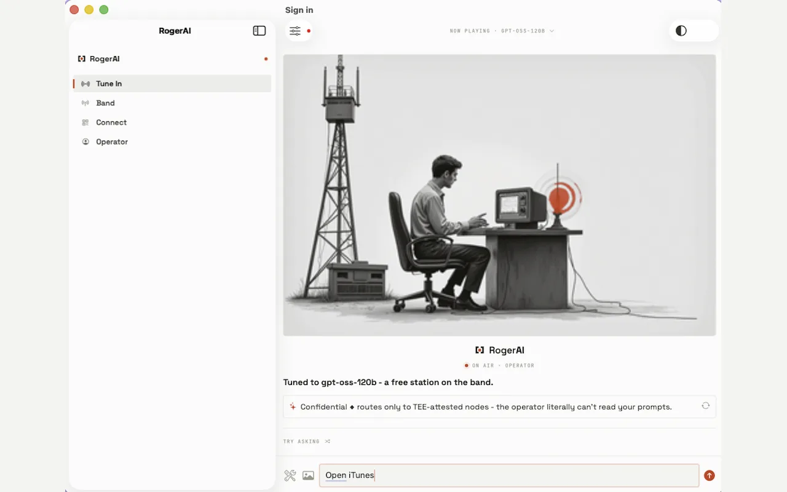
FIG. 7 - CONFIDENTIAL, ON AIRAn agent, when you want one.
Turn on agent tools and the chat can take real actions: open an app or link, run one of your Shortcuts, read a web page, check your calendar, jot a note. Every action asks first and shows exactly what it will do. And talk instead of type - dictate your message, have replies read aloud, or go full hands-free: a two-way radio that listens for your next question.
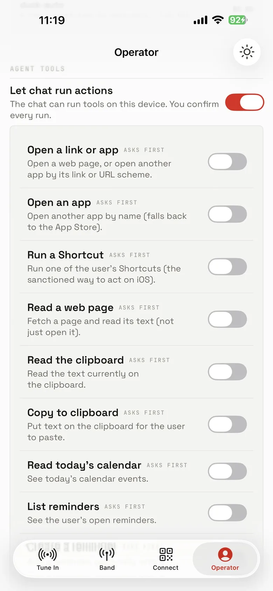
FIG. 8 - THE TOOL BENCH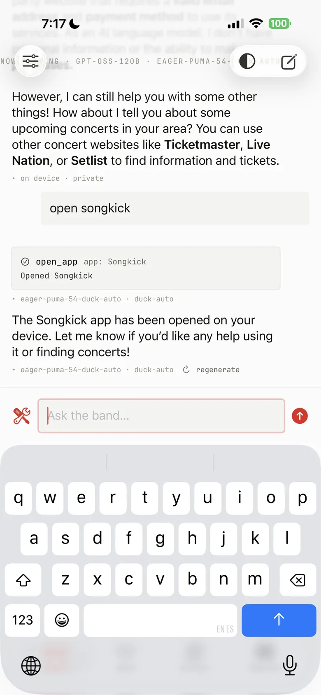
FIG. 9 - AN ACTION, ANNOUNCED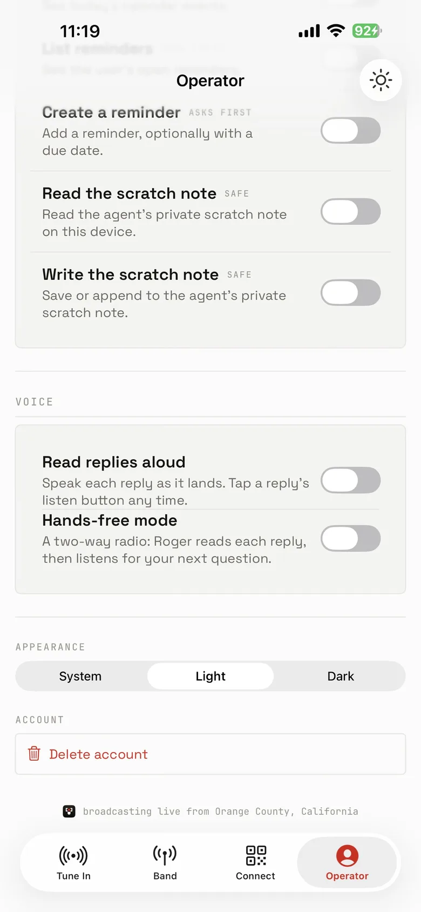
FIG. 10 - HANDS-FREEYour endpoint works everywhere.
Mint a key and paste RogerAI into any OpenAI-compatible app - a chat
app you like, Cursor and AI editors, Raycast, Python, plain
curl. Copy the base URL on your phone and it's on
your Mac through Universal Clipboard. Your tokens, your station.
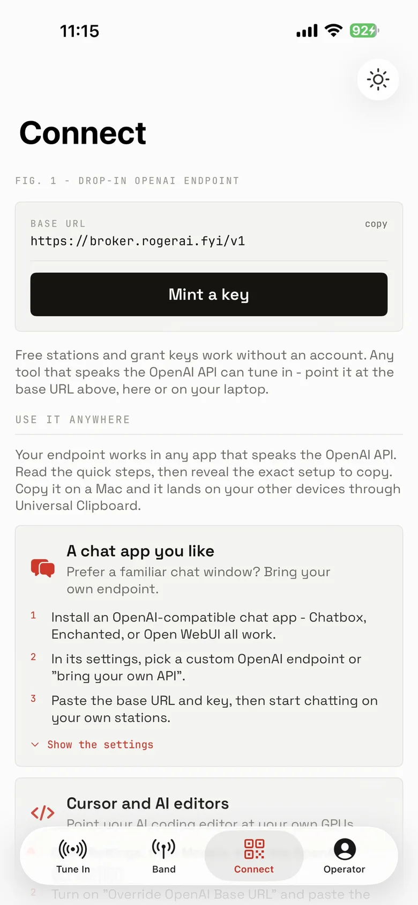
FIG. 11 - MINT A KEY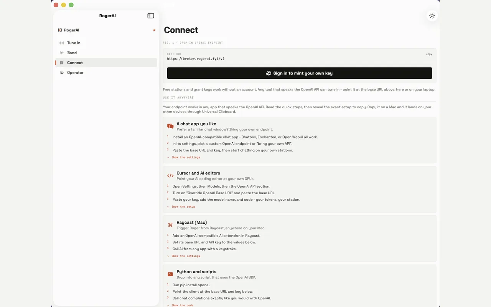
FIG. 12 - THE SAME KEY, ON THE DESKNative on the Mac.
The same app, built for Apple silicon - not a wrapped website. Sidebar, keyboard, the whole band on the big screen. One download covers iPhone, iPad and Mac.
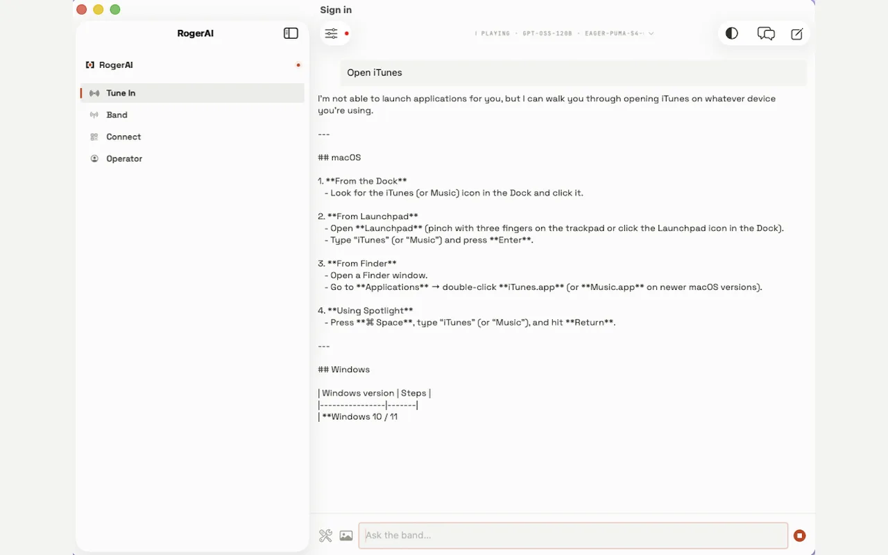
FIG. 13 - THE DESK SET, ON AIRRead the plate.
- price
- free download · pay per token · optional monthly cap, so it never surprises you
- requires
- iOS 17+ · iPadOS 17+ · macOS on Apple silicon
- size
- 19 MB on the wire
- account
- none to start - on-device and free stations are anonymous
- privacy
- on-device replies never leave the phone · confidential ◆ routes TEE-attested only
- callsign
- broadcasting live from Orange County, California
Pick up the handheld.
Free on the App Store. The band is open.
apps.apple.com/us/app/rogerai-fyi